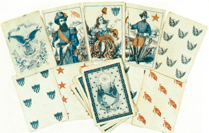

THE FRIENDLY
SOUTH
"The camp was located at the foot of a huge mountain from the
top of which
the enemy's camps were in plain view from the south side of the Tennesse
river. While in camp here the 77th picketed the north side of the
Tennesse, while the Confederate picket line extended along the south
side of the river. The lines being in plain view of each other,
frequent conversations, across the river, were held by the boys in blue
with those in gray."
--Sgt. John Obreiter